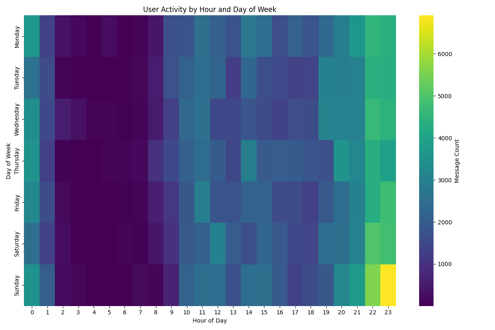
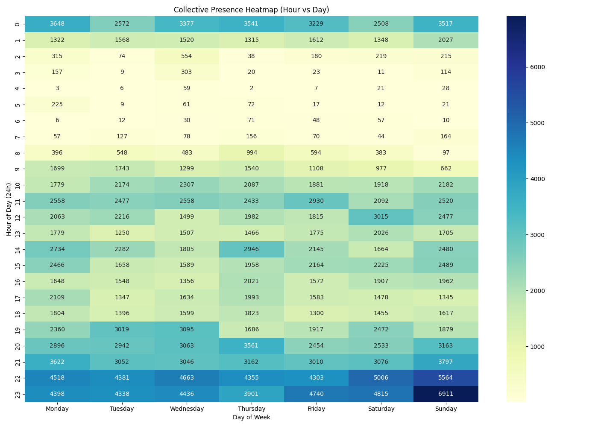
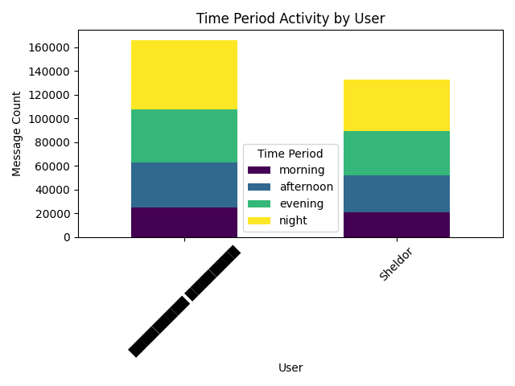
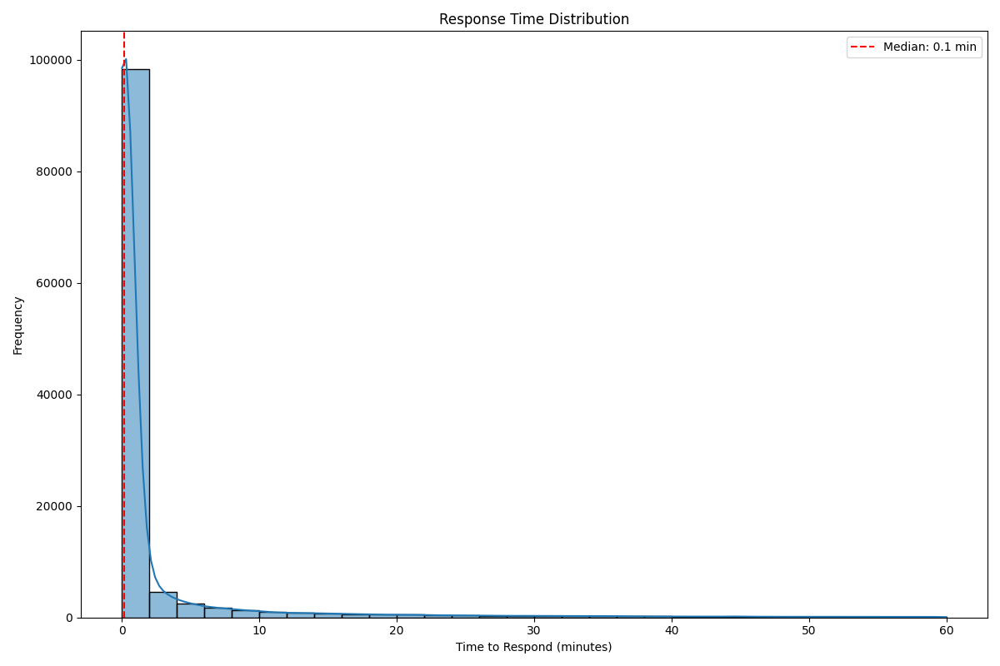
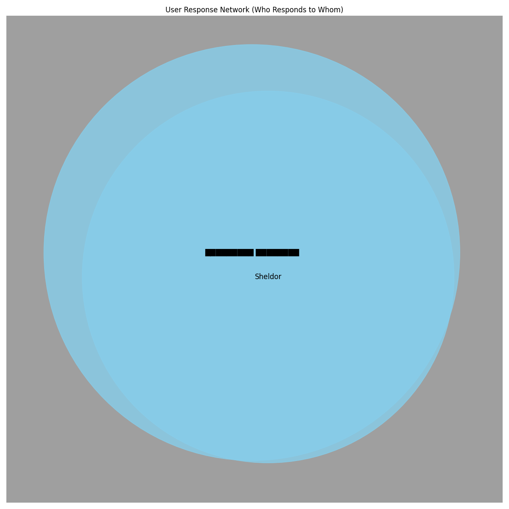
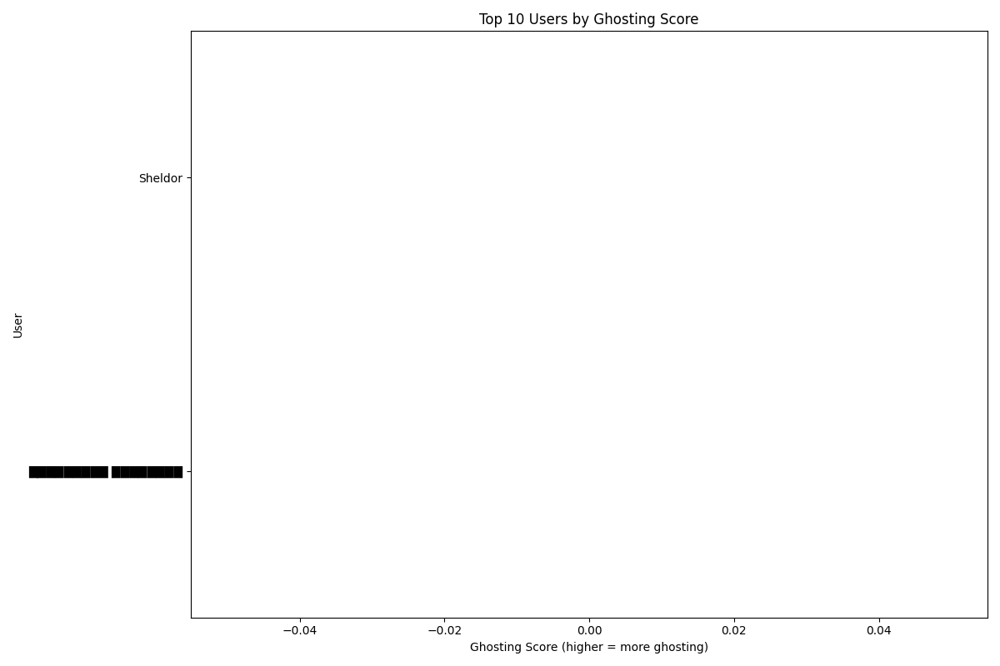
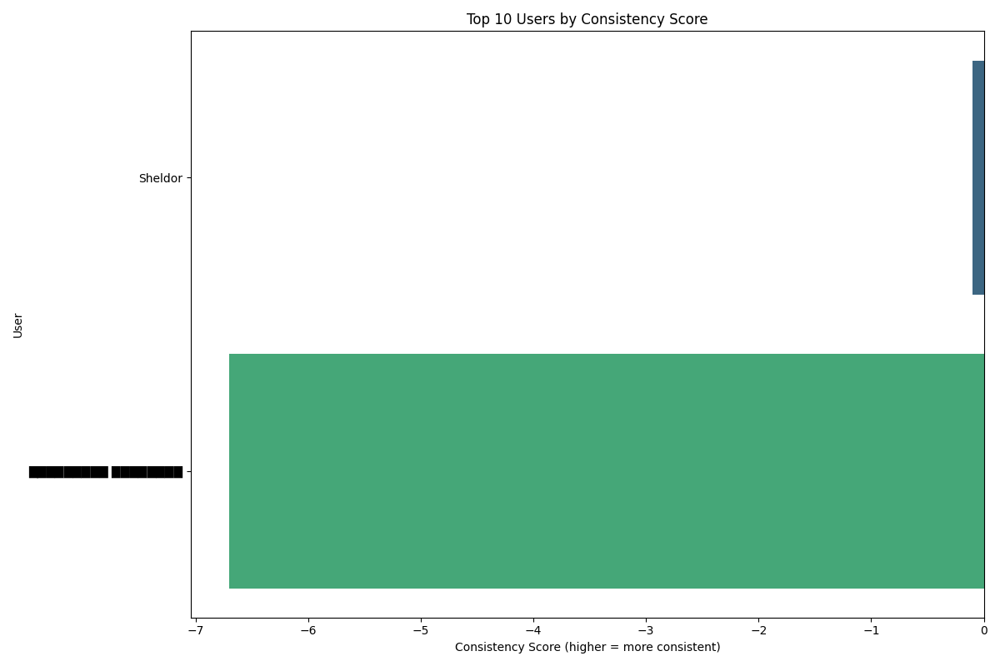

█████████ ████████
Active for 1640 days
Sheldor
Active for only 1577 days
Sunday
Friday

High-level view of activity by day and hour.

A deep dive into the group's "awake" hours across the entire week.

This chart shows when each user is most active during the day.
█████████ ████████ (1.7 min)
Sheldor (3.1 min)
█████████ ████████ (98.1%)
Sheldor (95.1%)
█████████ ████████ (36.3%)
Sheldor (45.4%)

This chart shows how quickly users respond to messages.
Fastest: █████████ ████████ (0.1m), Sheldor (0.2m)

This network shows who responds to whom in the chat.
This analysis identifies users who are present in the chat but tend not to respond to others. A high "ghosting" score means a user reads messages but rarely responds.

This chart shows users ranked by their tendency to "ghost" (be present but not respond).
█████████ ████████ (95.5%)
Sheldor (91.8%)
Sheldor (var: 46.08)
█████████ ████████ (var: 50.13)

This chart shows users ranked by how consistently they participate in the chat.
Sheldor
Was absent for 10 days
From 2021-09-24 to 2021-10-04